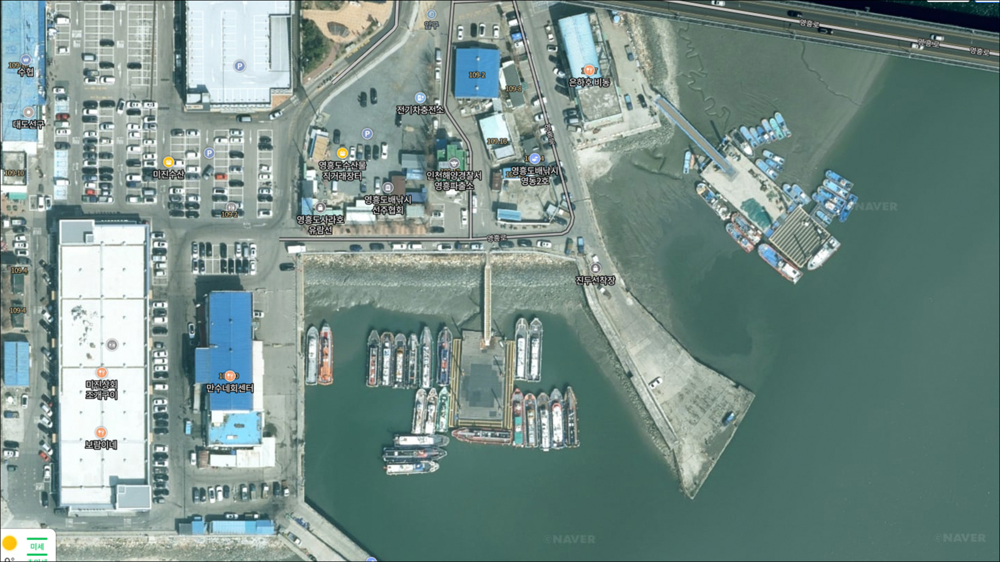
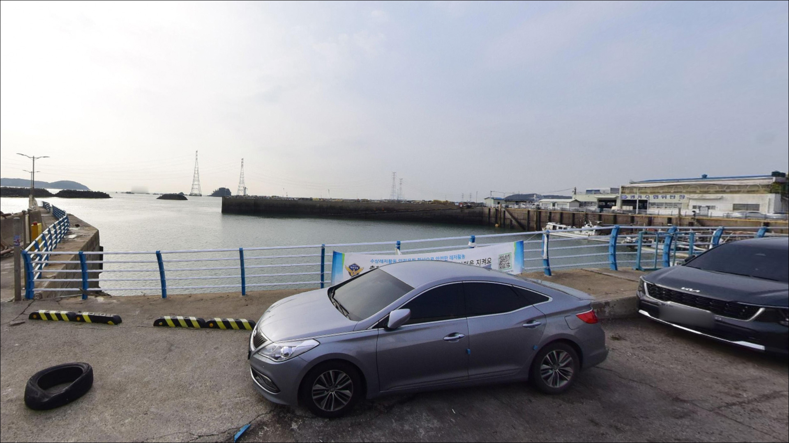
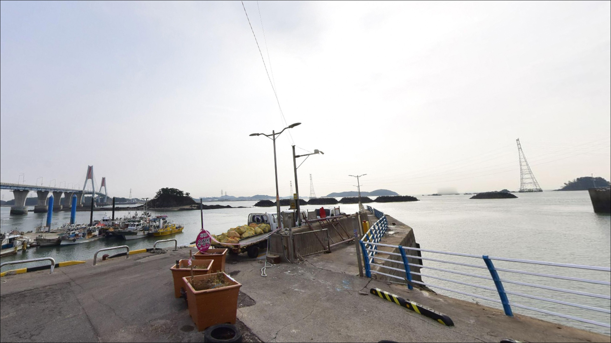
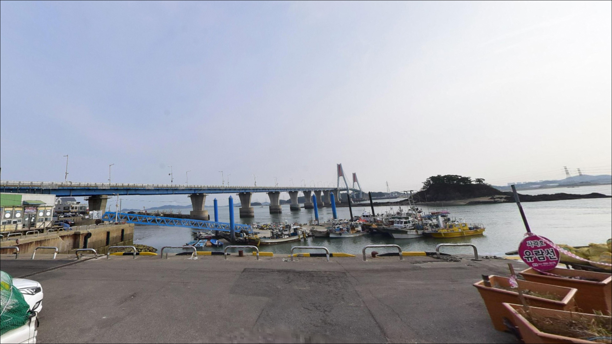
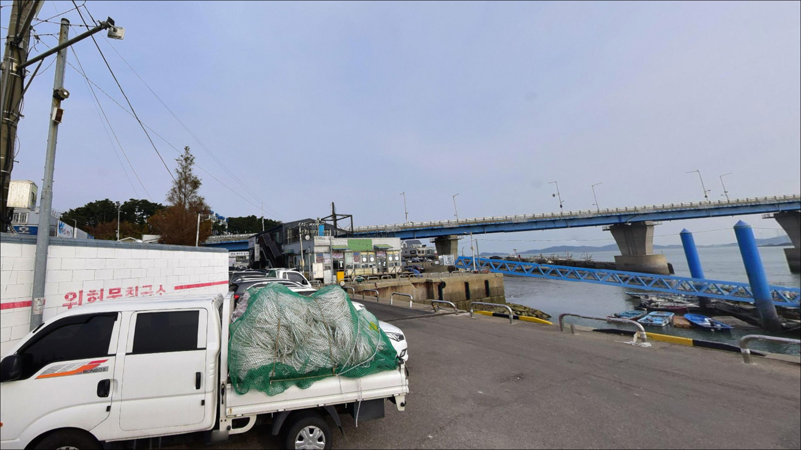
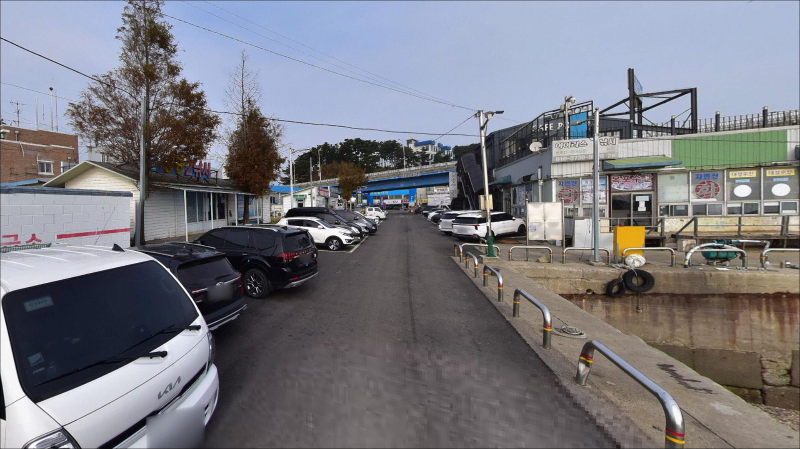
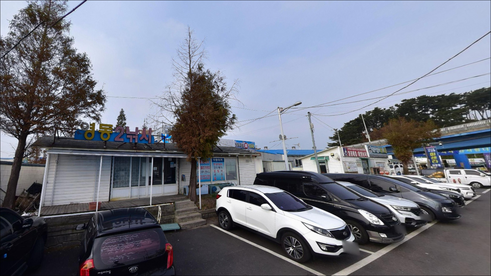
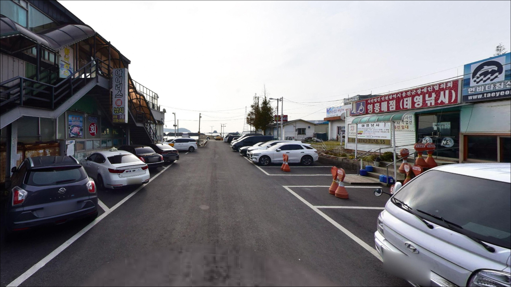
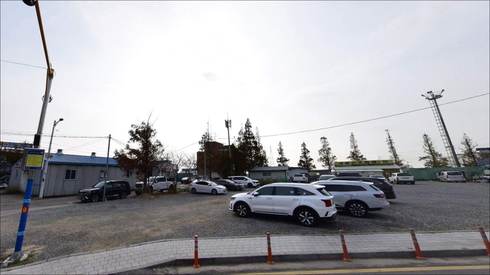

진두선착장, 진두공영주차장, 영흥도 인천 옹진군 풍경이 깊은 여운을 남기는 차박, 낚시 해안
이 페이지에는 광고(제휴 링크 포함)가 있으며, 광고 링크를 통해 구매하면 운영자가 판매 수익 또는 수수료를 받을 수 있습니다. 포인트 사진: 카카오맵 스카이뷰·로드뷰. 이 페이지의 지도·사진 이미지는 카카오맵의 실제 서비스 이미지와 다를 수 있습니다.


진두선착장
인천 옹진군 영흥면 내리 8-88
조류가 강하게 흐르는 창·낙조 타이밍에
진두방파제에 서면 무거운 봉돌을 달아도
채비가 바닥에 제대로 닿지 않고 흘러가는 상황이 생깁니다.
선재도와 영흥도 사이 수로를 통과하는 조류가
선착장 방향으로 흘러드는 구조여서,
물때를 맞추지 않으면 원투 채비든 에깅 채비든
제대로 운용하기가 어렵습니다.
이 글은 진두선착장의 진입 환경,
물때 판단 기준, 낚시 방식별 공략 조건,
차박 체류 여건을 중심으로 정리했습니다.
조황 정보나 특정 어종 보장은
이 글의 범위에 포함되지 않습니다.

1. 진입 동선과 포인트 접근성
진두선착장은 영흥대교를 건너자마자
바로 접근할 수 있는 포장도로 포인트입니다.
도로 폭이 넉넉한 편이어서 일반 승용차나
중형 SUV 기준으로는 진입 자체에 큰 어려움이 없습니다.
회차 공간도 선착장 주변에서 확보가 되는 구조로 보입니다.
주차는 선착장 인근 공터와 도로 가장자리를
활용하는 방식이 일반적입니다.
단, 이 선착장은 여러 배낚시 업체의 출항지이기도 해서
새벽 이른 시간대에는 출항 준비 차량이
몰리는 경향이 있습니다.
출항 집중 시간대 이후에 진입하거나,
전날 저녁부터 자리를 잡아두는 방식이
주차 여건 판단에 유리합니다.
어선 이동 동선과 수협 작업 구역을 막지 않는 자리가
낚시 차량도, 어민도 서로 편한 기본 조건입니다.
진두항은 지방어항으로 운영 중인 공간이라
선착장 작업 구역 주변은 차량을 세우지 않는 것이
매너에 맞습니다.

2. 차박 환경 평가 및 야간 체류 여건
영흥도 초입이라는 위치 특성상
수협 직판장과 식당, 상업시설이
선착장 인근에 밀집해 있습니다.
야간에도 조명이 어느 정도 유지되는 환경으로,
조용한 어촌 분위기보다는
관광지 입구 느낌에 가까운 야간 환경입니다.
외딴 포인트에서 조용히 하룻밤 보내는 스타일이라면
기대와 다를 수 있습니다.
수로 방향으로 외항이 열려 있어
서풍과 북풍이 강하게 불 때는
체감 바람이 세질 가능성이 있습니다.
차박을 메인 목적으로 삼기보다는
낚시 거점 베이스캠프로 활용하는 방식이
이 포인트에 어울리는 편입니다.


3. 주변 편의시설 및 인프라 현황
수협 직판장이 선착장 인근에 있어
신선한 해산물과 기본 식재료 조달이 가능합니다.
영흥면 소재지 방향으로 이동하면
편의점과 식당도 어렵지 않게 찾을 수 있는 편입니다.
완전 자급 체제를 갖추지 않아도 되는 포인트에 속합니다.
다만 야간 출조나 새벽 이른 시간대라면
필요한 음식과 음료는 미리 챙겨두는 편이 편합니다.
진두선착장은 수도권에서 영흥대교 하나만 건너면 닿는 위치라,
출발 전 마지막 편의점을 이용할 기회가
넉넉한 편입니다.

4. 방문 전 준비사항 및 체크 포인트
가장 먼저 확인해야 할 것은 물때입니다.
바다타임에서 영흥도 기준 물때를 검색해
조금 전후 또는 정조 전후 타이밍을
먼저 잡아두는 것이 기본입니다.
창조와 낙조가 강하게 흐르는 타이밍에
진입하면 무거운 봉돌을 써도
채비가 제대로 잡히지 않는 상황을 맞닥뜨리게 됩니다.
원투낚시를 준비한다면
봉돌 무게를 여유 있게 가져가는 편이 좋고,
에깅 채비도 여분을 넉넉히 챙겨두어야 합니다.
방파제 테트라포드 구간이 있는 포인트로,
야간에는 이 구간에 접근하지 않는 것이 안전합니다.
헤드랜턴과 구명조끼는 기본 장비입니다.
기상 예보도 출발 당일 아침에 한 번 더 확인하는 것이
바람 방향과 파도 높이를 파악하는 데 도움이 됩니다.
진두방파제 외항 끝단은 파도 넘침 가능성이 있어
만조 전후 파고 예보 확인이 선행되어야 합니다.

5. 지형 기반 낚시 여건 분석
진두선착장은 방파제와 선착장이 함께 있는 복합 포인트입니다.
선재도와 영흥도 사이 좁은 수로 방향을 바라보는 입지로,
창조와 낙조 때 이 수로를 통과하는 조류가
선착장 방향으로 흘러드는 구조입니다.
방파제 끝단과 외항 방향은 이 흐름을 직접 받는 자리로,
조류가 살아있는 타이밍에 입질이 올라오는 편입니다.
간조 수심은 2~4m 수준으로 추정되며
방파제 끝단으로 갈수록 깊어지는 경향이 있습니다.
바닥은 암초와 잔돌이 섞인 구조로 보이고,
테트라포드 구간 주변은 은신처 역할을 해
루어 반응이 나오는 자리가 됩니다.
밑걸림에 대비해 채비 여분을 충분히 챙겨야 합니다.
내항은 정박 선박이 있는 조용한 수면 구조입니다.
외항보다 조류 영향이 적어
찌낚시나 가벼운 루어 탐색에 활용해 볼 수 있습니다.
방파제 꺾이는 구간도 조류 변화가 생기는 지점으로,
탐색해볼 만한 자리입니다.
최신 조황은 가기 전에 꼭 검색해 보시기 바랍니다.


6. 외항 자리가 달라지는 낚시 스타일별 공략 조건
가을 시즌에는 쭈꾸미·갑오징어 에깅이
이 포인트에서 가장 어울리는 낚시 스타일입니다.
수로 방향 조류와 방파제 외항 끝단의 지형 조건이
에깅 채비가 힘을 발휘할 수 있는 환경을 만들어 줍니다.
정조 전후 타이밍을 먼저 계산하고 자리에 들어서는 것이
이 포인트 에깅 공략의 기본입니다.
원투낚시도 이 포인트 구조에 잘 맞는 스타일입니다.
조류가 느려지는 타이밍에 채비를 멀리 던져
바닥을 탐색하는 방식이 유효합니다.
봉돌은 조류 세기를 고려해 여분을 충분히 준비해야 합니다.
루어낚시로는 테트라포드 주변과
방파제 외항 방향을 탐색하는 방식이 어울립니다.
여름 새벽 시간대에 농어 활성이 있는 편이고,
우럭과 볼락도 기대해볼 수 있는 어종입니다.
감성돔 찌낚시는 내항 방향에서
조류가 느린 타이밍을 활용하는 방식이 맞습니다.
진두방파제 외항 끝단은 조류 변화가 커
루어 반응이 살아나는 자리입니다.

7. 대안 포인트와 플랜 B 동선
진두선착장 조류가 너무 강하거나
주차 여건이 여의치 않을 때는
영흥도 내 십리포 방향 방파제가 첫 번째 대안입니다.
진두선착장에서 약 4km 거리에 있으며,
워킹 낚시 공간이 비교적 넓어
자리를 옮겨 탐색하기 좋은 구조입니다.
선재도 방향으로 영흥대교를 되돌아 나오면
넛출선착장이 있습니다.
쭈꾸미·갑오징어·장어 계열을 노리는
워킹낚시 포인트로 알려진 곳으로,
진두선착장과 같은 해역 특성을 가지면서
상대적으로 한산한 분위기에서 낚시가 가능합니다.
양로봉 갯바위는 영흥도 내
바다타임에 등록된 갯바위 포인트로,
갯바위 낚시를 원하는 낚시인에게
대안이 되는 곳입니다.
진두선착장을 처음 찾는다면
십리포나 넛출을 보조 동선으로 잡아두는 것이
하루 출조를 효율적으로 운용하는 방법입니다.

수도권에서 가장 가까운
서해 방파제 낚시, 타이밍이 전부입니다
가을 쭈꾸미·갑오징어 에깅을 즐기는 낚시인이라면
영흥대교 하나만 건너면 닿는 접근성은
진두선착장의 가장 큰 장점입니다.
수로 조류와 방파제 지형이 에깅 채비와 잘 어울리고,
원투낚시나 루어낚시도 동시에 운용할 수 있는 구조여서
복수 채비를 들고 탐색하기 좋은 포인트입니다.
반면 물때 확인 없이 창·낙조 타이밍에 진입하거나
배낚시 출항 시간대에 주차 자리를 찾으러 간다면
낚시보다 대기에 시간을 쓰게 될 수 있습니다.
바다타임 물때 확인, 봉돌 여분 준비, 출항 시간대 파악,
이 세 가지를 갖추고 간다면
수도권에서 부담 없이 즐기는
서해 방파제 낚시의 좋은 선택지가 됩니다.
조용한 차박보다는 낚시 위주의 당일치기나
1박 출조 베이스캠프로 활용하는 방식이 맞는 곳으로,
낚시와 식도락을 함께 즐기고 싶은 낚시인에게도
잘 어울리는 포인트입니다.